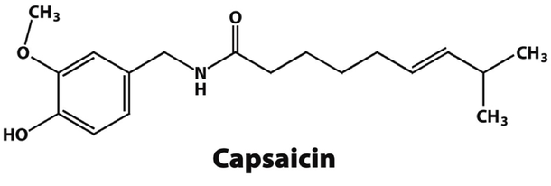
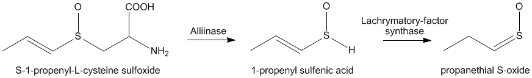

Pepperoni is on 35% of all pizza orders. Its color and ability to maintain its structure after being cooked are what makes it so appealing.
Pepperoni is a dry sausage, which means it isn't cooked. Instead, it's cured and fermented.
First, pork and beef are mashed and mixed together with various spices and flavorings.
Then, curing agents such as salt and sodium nitrite are added to prevent the growth of unwanted microorganisms, and lactic acid bacteria is added.
The meat is then stuffed into casings, which are often made of cellulose
Over the next two or three days the ground meat undergoes fermentation inside the casings. Lactic acid bacteria produce lactic acid, causing the meat’s pH to drop and preserving the meat.
Then, the sausages spend the next twelve to twenty days in a drying room to reduce the moisture level
After drying, the pepperoni is sliced, packaged, and shipped to supermarkets and restaurants where it can make its way onto our pizzas and subs.
Vitamin C - Good for your immune system
Manganese - An antioxidant
Sucrose, Glucose, Fructose - Sugars
Bromelain is an enzyme with inflammatory properties. This is what causes the prickly feeling in your mouth when you eat pineapples. When pineapples are cooked, the enzyme denatures and does not have the same affect.
Pineapple contains sugars such as sucrose, giving it a sweet flavor. Meanwhile, pizzas contain tomatoes, which have a more salty flavor. This combination of sweet and salty is what makes pineapple pizza so delicious.
Olives on pizza are typically black ripe olives.
They are processed in a lye curing solution to leach the bitterness out. After this step in the curing process, the olives undergo a series of water baths, followed by a process that gives the olives their stable color. Black ripe olives have a firm texture and a mellow taste.
There are many kinds of mushrooms found on pizza, the most common is the "common mushroom" or the "white mushroom". The scientific name of this mushroom isAgaricus bisporus
As any pizza chef would tell you, never use raw mushrooms on a pizza. Mushrooms contain a high water content, so when they are heated up, they begin to lose water, but don't start to actually cook yet. The time it takes a pizza to cook is nowhere enough time for the mushrooms to cook completely.
Therefore, if you plan on putting mushrooms on your pizza, it is recommended to saute them before hand.
Jalapeños contain a molecule called capsaicin, which is what makes them so spicy.
When jalapeño plants are stressed, as when they are lacking water, the capsaicin increases resulting in hotter peppers, and hotter pizzas.
Jalapeños are a high-acid food with a pH of 4.8-6.0
Lachrymatory-factor synthase is released into the air when we cut an onion.
The synthase enzyme converts the amino acids sulfoxides of the onion into sulfenic acid.
The unstable sulfenic acid rearranges itself into syn-ropanethial-S-oxide.
Syn-propanethial-S-oxide gets into the air and comes in contact with our eyes. The lachrymal glands become irritated and produces the tears!
When onions are cooked, the enzyme is denatured, so onions on pizza won't make you cry!